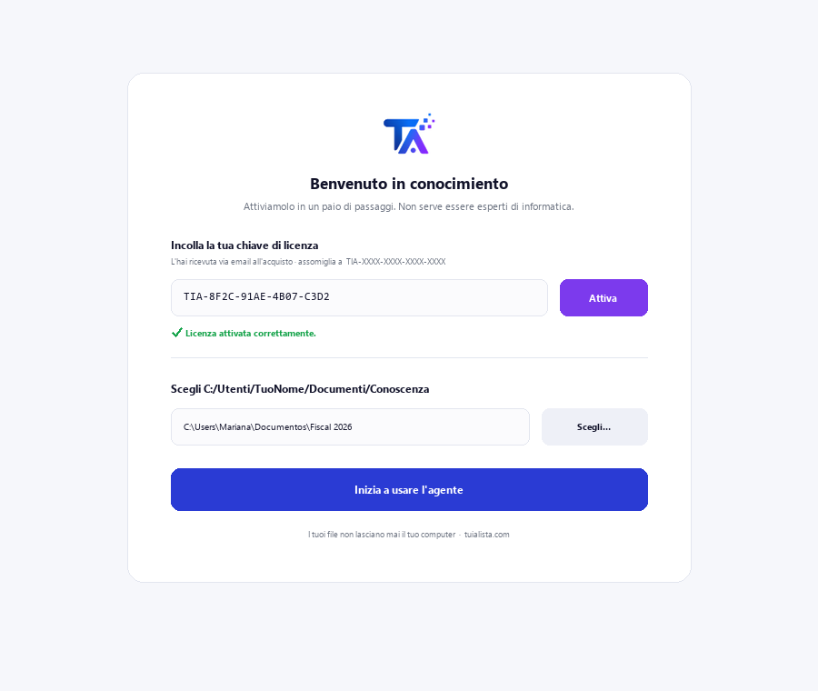
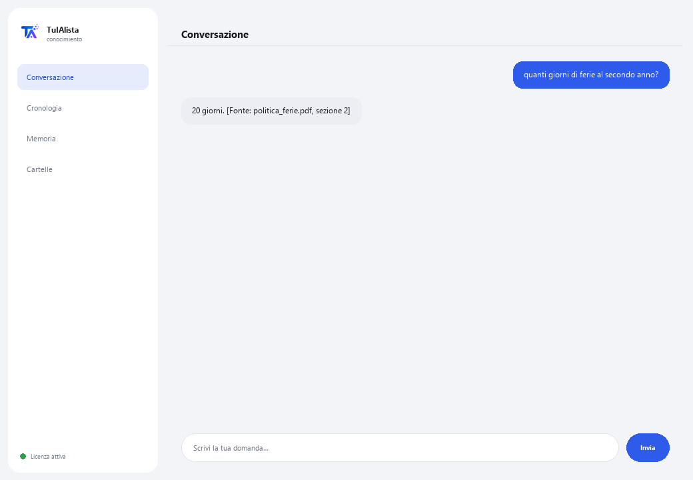

Agente Conoscenza Interna
Trasforma tutti i documenti della tua azienda in una base di conoscenza che risponde alle domande citando la fonte.
Cosa risolve e cosa ti serve?
In ogni azienda la conoscenza è dispersa: politiche in un PDF, processi in un Word, prezzi in un Excel, l'induzione in un PowerPoint. La risposta a “quanti giorni di ferie mi spettano” esiste, ma nessuno sa in quale file. Questo agente indicizza tutto e risponde citando esattamente da dove proviene ogni dato.
- Ti serve: la tua chiave di licenza (TIA-XXXX-XXXX-XXXX-XXXX) e la cartella con i documenti interni. Niente Python né conoscenze tecniche.
- Primo risultato in meno di 5 minuti: installi, attivi, scegli la tua cartella e chiedi direttamente ciò che hai bisogno di sapere.
- La conoscenza della tua azienda non lascia mai il tuo computer — l'indice viene costruito e consultato in locale.
soporte@tuialista.com o visita tuialista.com/soporte — di solito rispondiamo lo stesso giorno lavorativo.1 Cosa fa questo agente
Gli indichi la cartella con i documenti interni e l'agente:
- Li indicizza tutti (PDF, Word, Excel, CSV, PowerPoint, testo, Markdown) in una base locale.
- Divide ogni documento in frammenti per trovare la parte esatta che risponde.
- Risponde alle domande del tuo team usando solo quei documenti, e cita sempre da dove proviene ogni dato ([Fonte: file, sezione]).
- Riepiloga un argomento consolidando ciò che dicono più documenti.
- Rileva lacune di conoscenza: argomenti menzionati spesso ma senza un documento dedicato.
- Costruisce una directory di responsabili: chi appare come incaricato di cosa.
L'essenziale: se la risposta non è nei documenti, l'agente lo dice invece di inventare.
2 Installazione (2 minuti)
Per Windows. Non serve internet permanente né caricare nulla sul cloud.
Scarica l'installer da tuialista.com/descargar (agente Conoscenza) e aprilo. Crea un collegamento sul desktop con il logo — non richiede Python né terminale.
Doppio clic sulla nuova icona. Incolla la tua chiave di licenza (ricevuta via email all'acquisto) e premi Attiva. Vedrai un segno di spunta verde quando è valida.
Seleziona la cartella con i tuoi documenti interni e premi Inizia a usare l'agente. La prossima volta si avvia direttamente — ricorda la tua chiave e la tua cartella.

3 Come usarlo
L'agente apre una finestra di chat, come un'app di messaggistica — non è uno schermo nero da programmatore. Il suo uso principale è chiedere direttamente nella casella di testo, e ha anche alcuni comandi di esplorazione:

> domanda libera?L'uso principale. Scrivi la tua domanda così com'è, es.: quanti giorni di ferie corrispondono al secondo anno? — l'agente cerca nei documenti e risponde citando la fonte. Se l'informazione non c'è, te lo dice invece di inventare.
> argomentiElenca le categorie/aree coperte dai tuoi documenti (politiche, processi, sicurezza, Risorse Umane, finanza...) e in quanti file appare ciascuna.
> riepilogo <argomento>Raccoglie ciò che dicono più documenti su un argomento e prepara un riepilogo esecutivo, segnalando contraddizioni se presenti. Es.: riepilogo ferie.
> lacuneArgomenti menzionati abbastanza ma senza un documento proprio — utile per sapere quali politiche conviene scrivere.
> directoryNomi di persone che appaiono come responsabili/incaricati/contatti e in quali documenti.
> analizzare <file>Righe, numero di frammenti e un'anteprima di un documento indicizzato.
> esciTermina la sessione (funziona anche exit).
4 Esempi di uso comune
Risolvere un dubbio del team
qual è la procedura per richiedere un acquisto superiore a 10.000? — risposta con la citazione del documento e della sezione esatti.
Preparare un riepilogo per l'induzione
riepilogo sicurezza
Verificare la documentazione
argomenti → lacune — vedi quali aree sono ben coperte e quali hanno quasi nessuna documentazione.
Trovare il responsabile
directory
5 Domande frequenti
I documenti della mia azienda vengono caricati su internet?
Quali formati accetta?
Cita davvero la fonte?
Cosa succede se la risposta non è nei documenti?
Cosa fa se due documenti si contraddicono?
Ho aggiunto nuovi documenti, li rileva?
Come sceglie quali frammenti usare?
Legge un PDF scansionato?
In quale lingua risponde?
Modifica i miei documenti?
6 Risoluzione dei problemi
Non indicizza un .pdf, .docx, .xlsx o .pptx
Mostra “0 documenti indicizzati”
Una risposta cita il documento sbagliato
Mostra “Licenza non valida” o chiede di riconnettersi
“Nessun fornitore IA configurato”
Nessuna di queste soluzioni ha risolto il tuo problema? Scrivici direttamente — saremo felici di rivederlo con te.
soporte@tuialista.com o visita tuialista.com/soporte — di solito rispondiamo lo stesso giorno lavorativo.7 Privacy e riservatezza
La conoscenza della tua azienda non lascia mai il tuo computer.
- L'agente legge, divide in frammenti e indicizza i documenti in locale, sul tuo stesso dispositivo. Non li carica su nessun server.
- Le ricerche, gli argomenti, le lacune e la directory vengono calcolati sul tuo dispositivo.
- L'unica cosa che viaggia su internet è: (1) una verifica che la tua licenza sia attiva — che non include i tuoi documenti —, e (2) quando rispondi a una domanda o generi un riepilogo, vengono inviati i frammenti più rilevanti al motore IA per redigere la risposta. Il resto della conoscenza rimane locale.